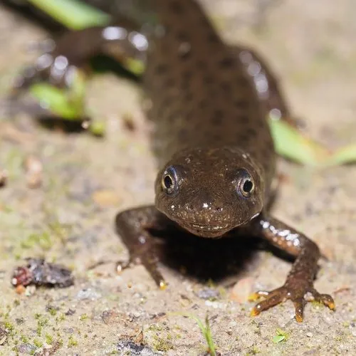

两栖动物 · 动物界
冠欧螈 Triturus cristatus

欧洲常见的大型蝾螈，繁殖期雄性背上会长出高高的锯齿状冠鳍，因池塘消失和栖息地破碎化而受保护。
- 分类
- 门脊索动物门纲两栖纲目有尾目科蝾螈科属欧螈属
- 栖息环境
- 欧洲的林地、农田、公园及静水池塘，繁殖期进入水中
- 地理分布
- 欧洲中部和北部，包括英国、法国、德国、波兰等地
- 保护级别
- IUCN 无危（LC）；欧洲多国受保护物种；非中国原产
物种志
冠欧螈体长 15–18 厘米，雌性略大于雄性，皮肤粗糙并布满小疣粒，背面呈深褐或黑褐色并带有深色斑点，腹面黄色或橙色，缀有黑色斑块。繁殖期雄性背脊上会长出高高的锯齿状冠鳍，尾部也出现蓝色或白色的条纹，用于求偶展示。
它分布于欧洲中部和北部的林地、农田与公园，成体多在陆地落叶层和草丛中生活，夜间捕食昆虫、蚯蚓、蜗牛和蝌蚪；每年 3–6 月进入池塘繁殖，雌螈把 200–400 枚卵逐粒粘在水草叶片上，约 2–3 周孵化。它在欧洲受到多国法律和国际公约保护，由于池塘消失、水体污染和栖息地破碎化，其种群数量下降；在中国它属于外来物种，饲养和放生需遵守规定。
形态与习性
- 食性昆虫、蚯蚓、蜗牛和蝌蚪
- 体长15–18 cm
- 寿命约 10–15 年
- 繁殖卵生，200–400 枚，逐粒粘于水草，约 2–3 周孵化
- 活动节律夜行性，白天藏在落叶层和石缝中
- 特点繁殖期雄性背部长出锯齿状冠鳍
趣味知识
- 繁殖期的雄性冠欧螈背上会长出高高的锯齿状冠鳍，用来吸引雌螈。
- 它把卵一粒粒粘在水草叶上，而不是聚成卵块。
- 冠欧螈在欧洲受到多国法律保护，池塘减少是它的主要威胁。